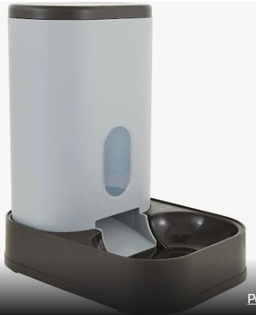
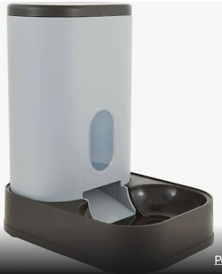

The World's Best Automated Refrigerated Cat Feeder
The pet product industry has seen a large spike in revenue over the past 10 years with the rise
of DINKS (Dual Income No Kids). These new age pet owners love providing unprecedented
levels of care to their fur babies.With advancements in automated pet care, such as automatic
dry food feeders, self cleaning litter boxes, and water fountains, this leaves one missing piece.
The refrigerated automatic pet feeder.This product will keep fresh pet food cool and dispense on
a user set schedule. We are currently in the design process for this amazing product and invite
you on our journey to create the World’s Best Automated Cat Feeder.
Email us at project.p.ssy.pets@gmail.com with questions.
 
